人工智慧
人工智慧
TR-4931：在Amazon Web Services和Guest Connect上使用VMware Cloud進行災難恢復
 建議變更
建議變更
作者：Chris Reno、Josh Powell和Suresh Thopp付款- NetApp解決方案工程
總覽
備受肯定的災難恢復（DR）環境與計畫、對於組織而言至關重要、因為如此一來、組織就能確保在重大停機事件中迅速還原業務關鍵應用程式。本解決方案著重於示範DR使用案例、重點在於內部部署的VMware與NetApp技術、以及使用AWS上的VMware Cloud。
NetApp與VMware的整合歷史悠久、已有數萬家客戶選擇NetApp做為其虛擬化環境的儲存合作夥伴、證明這一點。這項整合會繼續與雲端的來賓連線選項整合、以及最近與NFS資料存放區的整合。本解決方案著重於通常稱為來賓連線儲存設備的使用案例。
在客體連線儲存設備中、客體VMDK會部署在VMware資源配置的資料存放區上、而應用程式資料則儲存在iSCSI或NFS上、並直接對應至VM。Oracle和MS SQL應用程式用於示範DR案例、如下圖所示。

假設、先決條件和元件總覽
在部署此解決方案之前、請先檢閱元件的總覽、部署解決方案所需的先決條件、以及記錄此解決方案時所做的假設。
使用SnapCenter NetApp執行災難恢復
在本解決方案中SnapCenter 、支援針對SQL Server和Oracle應用程式資料提供應用程式一致的快照。此組態搭配SnapMirror技術、可在內部部署AFF 的Sfx6 ONTAP 和FSX支援叢集之間提供高速資料複寫功能。此外、Veeam備份與複寫也為我們的虛擬機器提供備份與還原功能。
在本節中、我們將說明SnapCenter 如何設定用於備份與還原的SnapMirror、SnapMirror和Veeam。
下列各節涵蓋在次要站台完成容錯移轉所需的組態和步驟：
設定SnapMirror關係和保留排程
為了長期歸檔和保留、可在主要儲存系統（主儲存系統>鏡射）和次要儲存系統（主儲存系統>保存庫）內更新SnapMirror關係。SnapCenter若要這麼做、您必須使用SnapMirror建立並初始化目的地Volume與來源Volume之間的資料複寫關係。
來源ONTAP 和目的地的不全系統必須位於使用Amazon VPC對等網路、傳輸閘道、AWS Direct Connect或AWS VPN進行對等處理的網路中。
在內部部署ONTAP 的SnapMirror系統與FSXSing之間建立SnapMirror關係時、必須執行下列步驟ONTAP ：

|
請參閱 "FSX- ONTAP for Sfor Sfor Sfor - ONTAP 《用戶指南》" 如需建立SnapMirror與FSX關係的詳細資訊、 |
記錄來源與目的地叢集間邏輯介面
對於ONTAP 內部部署的來源版的來源版系統、您可以從System Manager或CLI擷取叢集間的LIF資訊。
-
在「支援系統管理程式」中ONTAP 、瀏覽至「網路總覽」頁面、並擷取「類型：叢集間」的IP位址、這些位址已設定為與安裝FSx的AWS VPC通訊。

-
若要擷取FSX的叢集間IP位址、請登入CLI並執行下列命令：
FSx-Dest::> network interface show -role intercluster

在ONTAP Sfx6和FSX之間建立叢集對等關係
若要在ONTAP 各個叢集之間建立叢集對等關係、必須ONTAP 在其他對等叢集中確認在起始的叢集上輸入的獨特通關密碼。
-
使用「叢集對等點create」命令、在目的地FSX叢集上設定對等。出現提示時、請輸入稍後在來源叢集上使用的唯一密碼、以完成建立程序。
FSx-Dest::> cluster peer create -address-family ipv4 -peer-addrs source_intercluster_1, source_intercluster_2 Enter the passphrase: Confirm the passphrase:
-
在來源叢集上、您可以使用ONTAP SysSystem Manager或CLI建立叢集對等關係。從「系統管理程式」中、瀏覽至「保護」>「總覽」、然後選取「對等叢集」ONTAP 。

-
在對等叢集對話方塊中、填寫必要資訊：
-
輸入用於在目的地FSX叢集上建立對等叢集關係的通關密碼。
-
選取「是」以建立加密關係。
-
輸入目的地FSX叢集的叢集間LIF IP位址。
-
按一下「初始化叢集對等」以完成程序。

-
-
使用下列命令驗證來自FSX叢集的叢集對等關係狀態：
FSx-Dest::> cluster peer show

建立SVM對等關係
下一步是在包含SnapMirror關係的磁碟區的目的地與來源儲存虛擬機器之間建立SVM關係。
-
從來源FSX叢集、從CLI使用下列命令建立SVM對等關係：
FSx-Dest::> vserver peer create -vserver DestSVM -peer-vserver Backup -peer-cluster OnPremSourceSVM -applications snapmirror
-
從來源ONTAP 的物件叢集、接受與ONTAP SysSystem Manager或CLI的對等關係。
-
從「支援系統管理程式」移至「保護」>「總覽」、然後在「儲存VM對等端點」下選取「對等儲存VM」ONTAP 。

-
在對等儲存VM對話方塊中、填寫必填欄位：
-
來源儲存VM
-
目的地叢集
-
目的地儲存VM
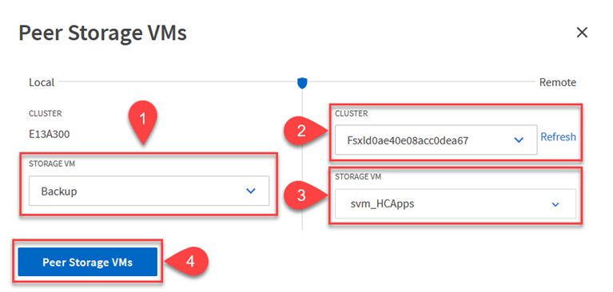
-
-
按一下對等儲存VM以完成SVM對等處理程序。
建立快照保留原則
可管理主要儲存系統上以快照複本形式存在的備份保留排程。SnapCenter這是SnapCenter 在建立一套以功能為基礎的原則時所建立的。不管理保留在二線儲存系統上的備份保留原則。SnapCenter這些原則是透過在次要FSX叢集上建立的SnapMirror原則來個別管理、並與與來源Volume處於SnapMirror關係中的目的地磁碟區相關聯。
建立SnapCenter Eshot原則時、您可以選擇指定次要原則標籤、並將其新增至SnapCenter 擷取此備份時所產生之每個Snapshot的SnapMirror標籤。
|
|
在二線儲存設備上、這些標籤會符合與目的地Volume相關的原則規則、以強制保留快照。 |
以下範例顯示SnapMirror標籤、其存在於所有快照上、這些快照是作為每日備份SQL Server資料庫和記錄磁碟區的原則之一。

如需建立SnapCenter SQL Server資料庫的各項功能性原則的詳細資訊、請參閱 "本文檔SnapCenter"。
您必須先建立SnapMirror原則、其中規定要保留的快照複本數量。
-
在FSX叢集上建立SnapMirror原則。
FSx-Dest::> snapmirror policy create -vserver DestSVM -policy PolicyName -type mirror-vault -restart always
-
使用SnapMirror標籤將規則新增至原則、這些標籤符合SnapCenter 在《保護原則》中指定的次要原則標籤。
FSx-Dest::> snapmirror policy add-rule -vserver DestSVM -policy PolicyName -snapmirror-label SnapMirrorLabelName -keep #ofSnapshotsToRetain
下列指令碼提供可新增至原則的規則範例：
FSx-Dest::> snapmirror policy add-rule -vserver sql_svm_dest -policy Async_SnapCenter_SQL -snapmirror-label sql-ondemand -keep 15
針對每個SnapMirror標籤和要保留的快照數量（保留期間）建立其他規則。
建立目的地Volume
若要在FSXTM上建立目的地Volume、使其成為來源Volume中快照複本的接收者、請在FSxTM上執行下列命令ONTAP ：
FSx-Dest::> volume create -vserver DestSVM -volume DestVolName -aggregate DestAggrName -size VolSize -type DP
在來源與目的地磁碟區之間建立SnapMirror關係
若要在來源與目的地Volume之間建立SnapMirror關係、請在FSX ONTAP Sf2上執行下列命令：
FSx-Dest::> snapmirror create -source-path OnPremSourceSVM:OnPremSourceVol -destination-path DestSVM:DestVol -type XDP -policy PolicyName
初始化SnapMirror關係
初始化SnapMirror關係。此程序會啟動從來源磁碟區產生的新快照、並將其複製到目的地磁碟區。
FSx-Dest::> snapmirror initialize -destination-path DestSVM:DestVol
在SnapCenter 內部部署及設定Windows靜態伺服器。
在SnapCenter 內部部署Windows功能伺服器
此解決方案使用NetApp SnapCenter 解決方案來執行SQL Server和Oracle資料庫的應用程式一致備份。搭配使用Veeam備份與複寫來備份虛擬機器VMDK、可為內部部署與雲端型資料中心提供全方位的災難恢復解決方案。
NetApp支援網站提供支援軟體、可安裝在位於網域或工作群組的Microsoft Windows系統上。SnapCenter如需詳細的規劃指南和安裝指示、請參閱 "NetApp文件中心"。
您可SnapCenter 從取得此軟體 "此連結"。
安裝完畢後、您可以SnapCenter 使用_\https://Virtual_Cluster_IP_or_FQDN:8146_從網頁瀏覽器存取此功能。
登入主控台之後、您必須設定SnapCenter 支援備份SQL Server和Oracle資料庫的功能。
將儲存控制器新增SnapCenter 至
若要將儲存控制器新增SnapCenter 至效益區、請完成下列步驟：
-
從左功能表中選取「Storage Systems（儲存系統）」、然後按一下「New（新增）」開始將儲存控制器新增SnapCenter 至VMware。

-
在「Add Storage System（新增儲存系統）」對話方塊中、新增本機內部部署ONTAP 的元件叢集的管理IP位址、以及使用者名稱和密碼。然後按一下「提交」開始探索儲存系統。

-
重複此程序、將FSX ONTAP 更新SnapCenter 為支援。在這種情況下、請選取「Add Storage System」（新增儲存系統）視窗底部的「More Options」（更多選項）、然後按一下「Secondary」（次要）核取方塊、將FSX系統指定為使用SnapMirror複本或我們的主要備份快照更新的次要儲存系統。

如需將儲存系統新增SnapCenter 至效益管理系統的相關資訊、請參閱文件、網址為 "此連結"。
將主機新增SnapCenter 至
下一步是將主機應用程式伺服器新增SnapCenter 至SQL Server和Oracle的程序類似。
-
從左功能表中選取「hosts」、然後按一下「Add（新增）」、開始將儲存控制器新增SnapCenter 至VMware。
-
在Add hosts（新增主機）視窗中、新增Host Type（主機類型）、Hostname（主機名稱）和主機系統認證。選取外掛程式類型。若為SQL Server、請選取Microsoft Windows和Microsoft SQL Server外掛程式。
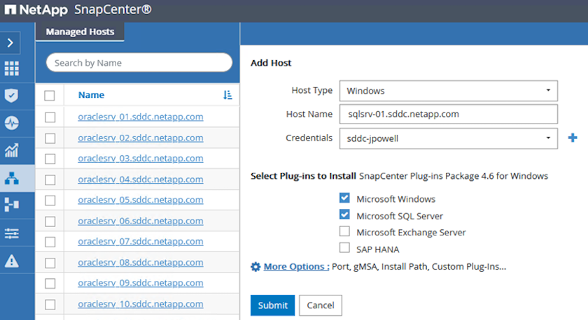
-
對於Oracle、請在「新增主機」對話方塊中填寫必填欄位、然後選取Oracle資料庫外掛程式的核取方塊。然後按一下「提交」開始探索程序、並將主機新增SnapCenter 至VMware。

建立SnapCenter 不規則
原則會針對備份工作建立要遵循的特定規則。其中包括但不限於備份排程、複寫類型、SnapCenter 以及如何處理備份和刪節交易記錄。
您可以在SnapCenter 「功能性」（英語）的「設定」（Settings）區段中存取原則。

如需建立SQL Server備份原則的完整資訊、請參閱 "本文檔SnapCenter"。
如需建立Oracle備份原則的完整資訊、請參閱 "本文檔SnapCenter"。
-
附註： *
-
當您逐步完成原則建立精靈時、請特別注意「複寫」區段。在本節中、您將說明您要在備份程序中取得的次要SnapMirror複本類型。
-
「建立本機Snapshot複本後再更新SnapMirror」設定是指當位於同一個叢集上的兩個儲存虛擬機器之間存在SnapMirror關係時、更新SnapMirror關係。
-
「建立SnapVault 本機快照複本後更新功能」設定可用來更新兩個獨立叢集之間、內部部署ONTAP 的SnapMirror系統與Cloud Volumes ONTAP BIOS或FSxN之間存在的SnapMirror關係。
下圖顯示上述選項、以及它們在備份原則精靈中的外觀。


部署及設定Veeam備份伺服器
解決方案中使用Veeam備份與複寫軟體來備份應用程式虛擬機器、並使用Veeam橫向擴充備份儲存庫（SOBR）將備份複本歸檔至Amazon S3儲存庫。在本解決方案中、Veeam部署於Windows伺服器上。如需部署Veeam的具體指引、請參閱 "Veeam說明中心技術文件"。
設定Veeam橫向擴充備份儲存庫
在您部署並授權軟體之後、您可以建立橫向擴充備份儲存庫（SOBR）作為備份工作的目標儲存設備。您也應該將S3儲存區納入異地備份VM資料、以便進行災難恢復。
請先參閱下列必要條件、再開始使用。
-
在內部部署ONTAP 的支援系統上建立SMB檔案共用區、做為備份的目標儲存設備。
-
建立Amazon S3儲存庫以納入SOBR。這是用於異地備份的儲存庫。
新增ONTAP 功能至Veeam
首先、在ONTAP Veeam中新增功能不支援的儲存叢集和相關的SMB/NFS檔案系統作為儲存基礎架構。
-
開啟Veeam主控台並登入。瀏覽至Storage Infrastructure、然後選取Add Storage。

-
在「Add Storage（新增儲存設備）」精靈中、選取NetApp作為儲存設備廠商、然後選取Data ONTAP 「NetApp」。
-
輸入管理IP位址、然後勾選NAS Filer方塊。按一下「下一步」

-
新增您的認證資料以存取ONTAP 整個叢集。

-
在NAS FilerTM頁面上、選擇所需的掃描傳輸協定、然後選取Next（下一步）。
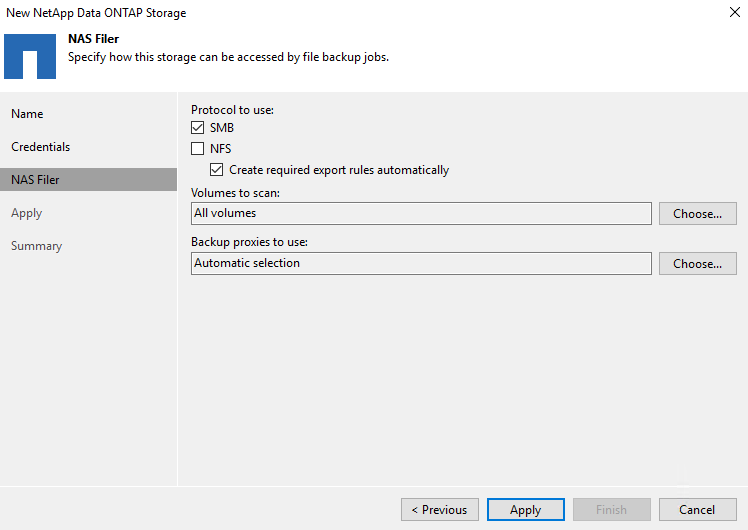
-
完成精靈的「Apply（套用）」和「Summary（摘要）」頁面、然後按一下「Finish（完成）」開始儲存探索程序。掃描完成後、ONTAP 即可將支援此功能的叢集與NAS檔案管理器一起新增為可用資源。

-
使用新發現的NAS共用區建立備份儲存庫。從備份基礎架構選取備份儲存庫、然後按一下新增儲存庫功能表項目。

-
請依照「新備份儲存庫精靈」中的所有步驟來建立儲存庫。如需建立Veeam備份儲存庫的詳細資訊、請參閱 "Veeam文件"。
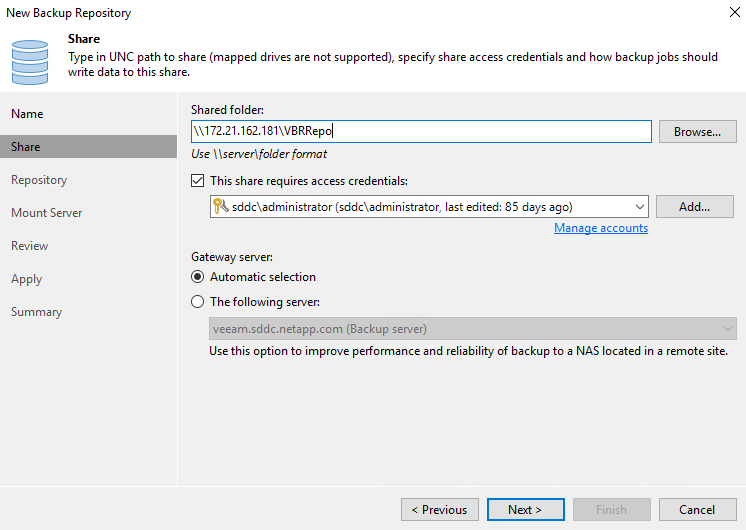
將Amazon S3儲存庫新增為備份儲存庫
下一步是將Amazon S3儲存設備新增為備份儲存庫。
-
瀏覽至「備份基礎架構」>「備份儲存庫」。按一下新增儲存庫。

-
在「新增備份儲存庫」精靈中、選取「物件儲存設備」、然後選取「Amazon S3」。這會啟動「新增物件儲存庫」精靈。

-
提供物件儲存庫的名稱、然後按「Next（下一步）」。
-
在下一節中、提供您的認證資料。您需要AWS存取金鑰和秘密金鑰。

-
Amazon組態載入後、請選擇您的資料中心、儲存庫和資料夾、然後按一下「Apply（套用）」。最後、按一下「完成」以關閉精靈。
建立橫向擴充備份儲存庫
現在我們已將儲存儲存庫新增至Veeam、我們可以建立SOBR、將備份複本自動分層至異地Amazon S3物件儲存設備、以進行災難恢復。
-
從備份基礎架構選取橫向擴充儲存庫、然後按一下新增橫向擴充儲存庫功能表項目。

-
在「新增橫向擴充備份儲存庫」中、提供SOBR名稱、然後按「下一步」。
-
對於效能層、請選擇包含SMB共用的備份儲存庫、該SMB共用位於本機ONTAP 的資訊區叢集上。
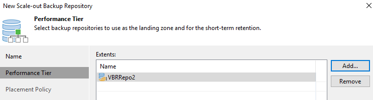
-
針對「放置原則」、請根據您的需求選擇「資料位置」或「效能」。選取「下一步」。
-
在容量層方面、我們將SOBR延伸至Amazon S3物件儲存設備。為了進行災難恢復、請在建立備份後立即選取「複製備份到物件儲存設備」、以確保我們的次要備份能夠及時交付。

-
最後、選取「Apply（套用）」和「Finish（完成）」以完成建立SOBR。
建立橫向擴充備份儲存庫工作
設定Veeam的最後步驟、是使用新建立的SOBR作為備份目的地來建立備份工作。建立備份工作是任何儲存系統管理員的常用程序、我們不在此詳述詳細步驟。如需在Veeam中建立備份工作的完整資訊、請參閱 "Veeam說明中心技術文件"。
BlueXP 備份與還原工具與組態
若要將應用程式VM和資料庫Volume容錯移轉至執行於AWS的VMware Cloud Volume服務、您必須同時安裝SnapCenter 並設定執行中的VMware Server和Veeam備份與複寫伺服器執行個體。容錯移轉完成後、您也必須設定這些工具、以便恢復正常的備份作業、直到規劃並執行內部部署資料中心的容錯回復為止。
部署次要Windows SnapCenter 功能伺服器
支援VMware Cloud SDDC部署的VMware伺服器、或安裝在VPC中的EC2執行個體上、並可透過網路連線至VMware Cloud環境。SnapCenter
NetApp支援網站提供支援軟體、可安裝在位於網域或工作群組的Microsoft Windows系統上。SnapCenter如需詳細的規劃指南和安裝指示、請參閱 "NetApp文件中心"。
您可以在找到SnapCenter 該軟件 "此連結"。
設定次要Windows SnapCenter 靜態伺服器
若要還原鏡射至FSXS庫ONTAP 的應用程式資料、您必須先執行內部部署SnapCenter 的整套還原資料庫。完成此程序後、將重新建立與VM的通訊、並使用FSX還原ONTAP 做為主要儲存設備來恢復應用程式備份。
若要達成此目標、您必須在SnapCenter the努力伺服器上完成下列項目：
-
將電腦名稱設定為與原始內部部署SnapCenter 的內部部署伺服器相同。
-
設定網路功能、以便與VMware Cloud和FSX ONTAP 支援例項進行通訊。
-
完成還原SnapCenter 整套程序以還原整個資料庫。
-
確認SnapCenter 支援功能為災難恢復模式、以確保FSX現在是備份的主要儲存設備。
-
確認已與還原的虛擬機器重新建立通訊。
如需完成這些步驟的詳細資訊、請參閱「到」一節 "資料庫還原程序SnapCenter"。
部署次要Veeam備份與擴大機；複寫伺服器
您可以將Veeam備份與複寫伺服器安裝在AWS或EC2執行個體上VMware Cloud的Windows伺服器上。如需詳細的實作指南、請參閱 "Veeam說明中心技術文件"。
設定次要Veeam備份與擴大機；複寫伺服器
若要還原已備份至Amazon S3儲存設備的虛擬機器、您必須在Windows伺服器上安裝Veeam伺服器、並將其設定為與VMware Cloud、FNSX ONTAP 及包含原始備份儲存庫的S3儲存庫進行通訊。此外、還必須在FSX ONTAP 更新上設定新的備份儲存庫、以便在VM還原後進行新的備份。
若要執行此程序、必須完成下列項目：
-
設定網路功能、以便與VMware Cloud、FSX ONTAP 功能區及內含原始備份儲存庫的S3儲存區進行通訊。
-
將FSXSf2 ONTAP 上的SMB共用區設定為新的備份儲存庫。
-
將原本作為橫向擴充備份儲存庫一部分的S3儲存庫掛載到內部部署。
-
還原VM之後、請建立新的備份工作來保護SQL和Oracle VM。
如需使用Veeam還原VM的詳細資訊、請參閱一節 "使用Veeam完整還原還原應用程式VM"。
適用於災難恢復的資料庫備份SnapCenter
支援基礎MySQL資料庫及組態資料的備份與還原、以便在發生災難時恢復該伺服器。SnapCenter SnapCenter就我們的解決方案而言、我們在SnapCenter VPC內的AWS EC2執行個體上恢復了該資料庫和組態。如需此步驟的詳細資訊、請參閱 "此連結"。
支援需求SnapCenter
下列先決條件是SnapCenter 進行資訊備份所需的條件：
-
在內部部署ONTAP 的支援系統上建立一個Volume和SMB共用區、以找出備份的資料庫和組態檔案。
-
內部部署ONTAP 的SnapMirror系統與AWS帳戶中的FSX或CVO之間的SnapMirror關係。此關係用於傳輸包含備份SnapCenter 的還原資料庫和組態檔案的快照。
-
安裝在雲端帳戶的Windows Server、可安裝在EC2執行個體或VMware Cloud SDDC的VM上。
-
安裝在Windows EC2執行個體或VMware Cloud VM上的SnapCenter
支援備份與還原程序摘要SnapCenter
-
在內部部署ONTAP 的內部系統上建立一個磁碟區、以裝載備份資料庫和組態檔案。
-
在內部部署與FSx/CVO之間建立SnapMirror關係。
-
掛載SMB共用區。
-
擷取Swagger授權權杖以執行API工作。
-
啟動資料庫還原程序。
-
使用xcopy公用程式將資料庫和組態檔案本機目錄複製到SMB共用區。
-
在FSX上、建立ONTAP 一個Clone of the Sf2 Volume（透過內部部署的SnapMirror複製）。
-
將SMB共用區從FSX掛載至EC2/VMware Cloud。
-
將還原目錄從SMB共用複製到本機目錄。
-
從Swagger執行SQL Server還原程序。
備份SnapCenter 還原資料庫與組態
支援執行REST API命令的Web用戶端介面。SnapCenter如需透過Swagger存取REST API的相關資訊、請參閱SnapCenter 上的《》文件 "此連結"。
登入Swagger並取得授權權杖
瀏覽至Swagger頁面後、您必須擷取授權權杖、才能啟動資料庫還原程序。
-
請至SnapCenter https://<SnapCenter伺服器IP：8146/swagger/_存取《Seswagger API》網頁。
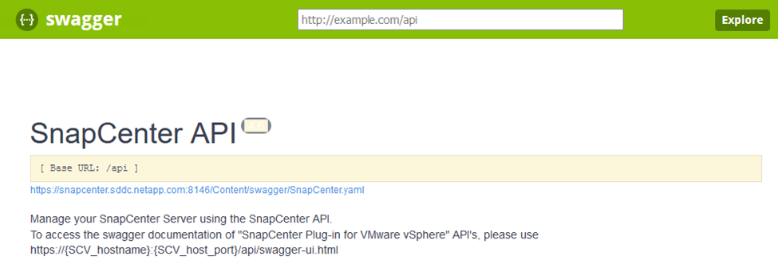
-
展開「驗證」區段、然後按一下「試用」。

-
在UserOperationConttext區域中、填入SnapCenter 「資訊」認證和角色、然後按一下「執行」。

-
在下方的「回應」本文中、您可以看到權杖。執行備份程序時、請複製權杖文字以進行驗證。

執行SnapCenter 資料庫的還原備份
接下來前往Swagger頁面上的Disaster Recovery區域、開始SnapCenter 執行VMware還原程序。
-
按一下「Disaster Recovery（災難恢復）」區域即可展開。

-
展開「/4.6/dissterrecovery /server/Backup」區段、然後按一下「Try it out（試用）」。

-
在「SmDRBackup Request」區段中、新增正確的本機目標路徑、然後選取「執行」以開始SnapCenter 備份整個過程中的資料庫和組態。
備份程序不允許直接備份到NFS或CIFS檔案共用區。 
從SnapCenter 無法監控備份工作
登入SnapCenter 功能以在開始資料庫還原程序時檢閱記錄檔。在「Monitor（監控）」區段下、您可以檢視SnapCenter 有關支援伺服器災難恢復備份的詳細資料。

使用XCOPY公用程式將資料庫備份檔案複製到SMB共用區
接下來、您必須將備份從SnapCenter 位於支援服務器上的本機磁碟機移至CIFS共用區、以便SnapMirror將資料複製到位於AWS FSX執行個體上的次要位置。使用xcopy搭配保留檔案權限的特定選項。
以系統管理員身分開啟命令提示字元。在命令提示字元中輸入下列命令：
xcopy <Source_Path> \\<Destination_Server_IP>\<Folder_Path> /O /X /E /H /K xcopy c:\SC_Backups\SnapCenter_DR \\10.61.181.185\snapcenter_dr /O /X /E /H /K
容錯移轉
災難發生在主站台
如果發生在一線內部部署資料中心的災難、我們的案例包括使用AWS上的VMware Cloud、將容錯移轉到位於Amazon Web Services基礎架構上的二線站台。我們假設虛擬機器和內部部署ONTAP 的VMware叢集已無法再存取。此外SnapCenter 、無法再存取VMware和Veeam虛擬機器、而且必須在我們的次要站台上重建。
本節說明將基礎架構容錯移轉至雲端、並涵蓋下列主題：
-
還原資料庫。SnapCenter建立新SnapCenter 的支援伺服器之後、請還原MySQL資料庫和組態檔案、並將資料庫切換為災難恢復模式、以便次要FSX儲存設備成為主要儲存設備。
-
使用Veeam備份與複寫還原應用程式虛擬機器。連接內含VM備份的S3儲存設備、匯入備份、然後將其還原至AWS上的VMware Cloud。
-
使用SnapCenter 支援功能還原SQL Server應用程式資料。
-
使用SnapCenter 支援功能還原Oracle應用程式資料。
資料庫還原程序SnapCenter
支援災難恢復案例、可備份及還原MySQL資料庫和組態檔案。SnapCenter這可讓管理員在SnapCenter 內部部署資料中心維持對該資料庫的定期備份、並於稍後將該資料庫還原至次要SnapCenter 的還原資料庫。
若要存取SnapCenter 遠端SnapCenter 還原伺服器上的還原備份檔案、請完成下列步驟：
-
中斷來自FSX叢集的SnapMirror關係、這會使磁碟區變成讀取/寫入。
-
建立CIFS伺服器（如有必要）、並建立CIFS共用區、指向複製Volume的交會路徑。
-
使用xcopy將備份檔案複製到二線SnapCenter 版的本機目錄。
-
安裝SnapCenter vsv4.6。
-
請確保SnapCenter 該伺服器的FQDN與原始伺服器相同。若要成功還原資料庫、就必須執行此動作。
若要開始還原程序、請完成下列步驟：
-
瀏覽至次要SnapCenter 版伺服器的Swagger API網頁、並依照先前的指示取得授權權杖。
-
瀏覽至Swagger頁面的Disaster Recovery（災難恢復）區段、選取「/4.6/disasterrecovery / server/recovery」（/4.6/disasterrecovery /伺服器/還原）、然後按一下「Try it out（試用）」。

-
貼上您的授權權杖、然後在「SmDRResterRequest」區段中、貼上備份名稱和次要SnapCenter 伺服器上的本機目錄。

-
選取「執行」按鈕以開始還原程序。
-
從功能區塊瀏覽至「監控」區段、以檢視還原工作的進度。SnapCenter


-
若要從二線儲存設備啟用SQL Server還原、您必須將SnapCenter 此還原資料庫切換為「災難恢復」模式。這是以個別作業的形式執行、並在Swagger API網頁上啟動。
-
瀏覽至「Disaster Recovery（災難恢復）」區段、然後按一下「/4.6/dissterrecovery / storage（/4.6/disstersterrecovery
-
貼入使用者授權權杖。
-
在SmSetDissterRecoverySettingsRequest區段中、將「EnablDisasterRecover」變更為「true」。
-
按一下「執行」以啟用SQL Server的災難恢復模式。

請參閱其他程序的相關意見。 -
使用Veeam完整還原還原應用程式VM
建立備份儲存庫、並從S3匯入備份
從次要Veeam伺服器、從S3儲存設備匯入備份、並將SQL Server和Oracle VM還原至VMware Cloud叢集。
若要從內部部署橫向擴充備份儲存庫中的S3物件匯入備份、請完成下列步驟：
-
移至「備份儲存庫」、然後按一下上方功能表中的「新增儲存庫」、以啟動「新增備份儲存庫」精靈。在精靈的第一頁、選取「物件儲存」作為備份儲存庫類型。

-
選取「Amazon S3」作為「物件儲存類型」。

-
從Amazon Cloud Storage Services清單中、選取Amazon S3。

-
從下拉式清單中選取預先輸入的認證資料、或新增認證資料以存取雲端儲存資源。按一下「下一步」繼續。

-
在「時段」頁面上、輸入資料中心、時段、資料夾及任何所需選項。按一下套用。

-
最後、選取「完成」以完成程序並新增儲存庫。
從S3物件儲存設備匯入備份
若要從上一節新增的S3儲存庫匯入備份、請完成下列步驟。
-
從S3備份儲存庫選取匯入備份、以啟動匯入備份精靈。

-
建立匯入的資料庫記錄之後、請在摘要畫面中選取「Next（下一步）」、然後選取「Finish（完成）」、開始匯入程序。

-
匯入完成後、您可以將VM還原至VMware Cloud叢集。

使用Veeam完整還原將應用程式VM還原至VMware Cloud
若要將SQL和Oracle虛擬機器還原至AWS工作負載網域/叢集上的VMware Cloud、請完成下列步驟。
-
在Veeam首頁中、選取包含匯入備份的物件儲存設備、選取要還原的VM、然後按一下滑鼠右鍵並選取「還原整個VM」。
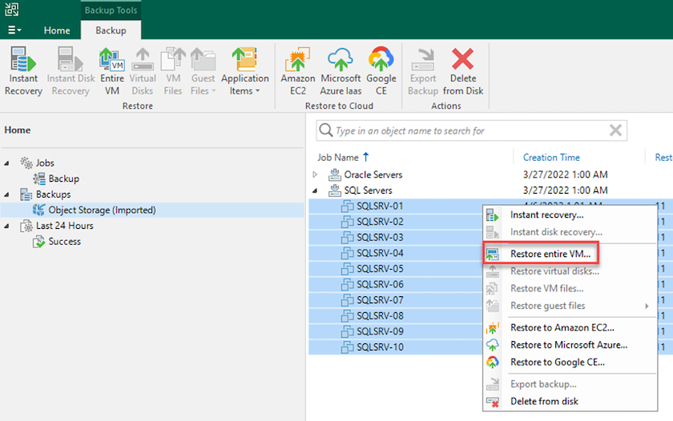
-
在完整VM還原精靈的第一頁、視需要修改要備份的VM、然後選取「Next（下一步）」。
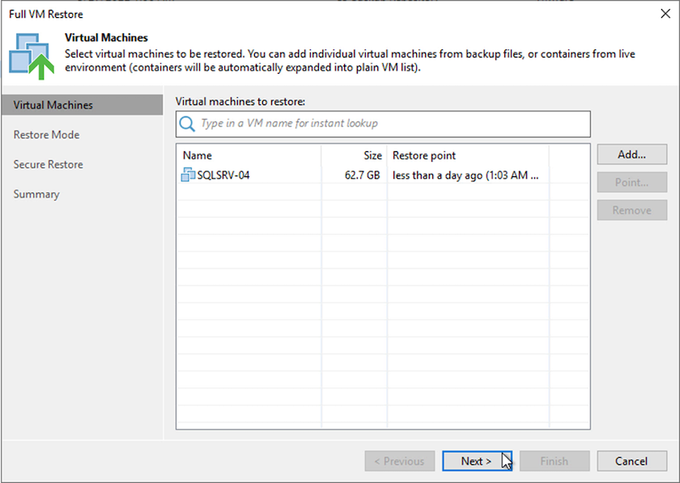
-
在「還原模式」頁面上、選取「還原至新位置」或「使用不同的設定」。

-
在主機頁面上、選取要還原VM的目標ESXi主機或叢集。

-
在「資料存放區」頁面上、選取組態檔和硬碟的目標資料存放區位置。

-
在「網路」頁面上、將VM上的原始網路對應到新目標位置的網路。

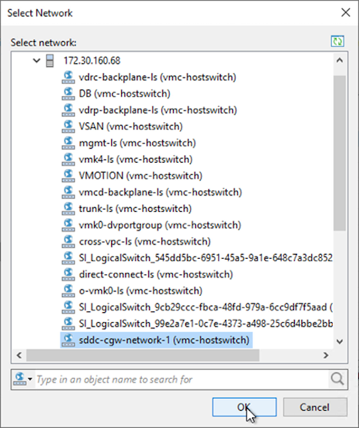
-
選取是否掃描還原的VM以尋找惡意軟體、檢閱摘要頁面、然後按一下「Finish（完成）」以開始還原。
還原SQL Server應用程式資料
下列程序提供如何在發生導致內部部署站台無法運作的災難時、在AWS的VMware Cloud Services中還原SQL Server的指示。
為了繼續執行恢復步驟、假設您已完成下列先決條件：
-
Windows Server VM已使用Veeam完整還原還原至VMware Cloud SDDC。
-
我們SnapCenter 已建立次要的伺服器、SnapCenter 並已使用一節中所述的步驟完成還原資料庫和組態設定 "支援備份與還原程序摘要。SnapCenter"
VM：SQL Server VM的還原後組態
在VM還原完成後、您必須設定網路和其他項目、以便重新探索SnapCenter 位於支援中心內的主機VM。
-
指派新的IP位址給管理、iSCSI或NFS。
-
將主機加入Windows網域。
-
將主機名稱新增至DNS或SnapCenter 到伺服器上的主機檔案。
|
|
如果SnapCenter 使用與目前網域不同的網域認證來部署這個程式、您就必須變更SQL Server VM上適用於Windows Service外掛程式的登入帳戶。變更登入帳戶後、請重新啟動SnapCenter 適用於Windows的WESTSMCore、外掛程式和適用於SQL Server服務的外掛程式。 |
|
|
若要自動重新探索SnapCenter 還原的虛擬機器、FQDN必須與原先新增至SnapCenter 內部部署的虛擬機器相同。 |
設定FSX儲存設備以進行SQL Server還原
若要完成SQL Server VM的災難恢復還原程序、您必須中斷現有的SnapMirror與FSX叢集之間的關係、並授予對該磁碟區的存取權。若要這麼做、請完成下列步驟。
-
若要中斷SQL Server資料庫和記錄磁碟區的現有SnapMirror關係、請從FSXCLI執行下列命令：
FSx-Dest::> snapmirror break -destination-path DestSVM:DestVolName
-
建立包含SQL Server Windows VM iSCSI IQN的啟動器群組、以授予LUN存取權：
FSx-Dest::> igroup create -vserver DestSVM -igroup igroupName -protocol iSCSI -ostype windows -initiator IQN
-
最後、將LUN對應至您剛建立的啟動器群組：
FSx-Dest::> lun mapping create -vserver DestSVM -path LUNPath igroup igroupName
-
若要尋找路徑名稱、請執行「LUN show」命令。
設定Windows VM以進行iSCSI存取、並探索檔案系統
-
在SQL Server VM中、設定iSCSI網路介面卡、以便在已建立連線至FSX執行個體上iSCSI目標介面的VMware連接埠群組上進行通訊。
-
開啟iSCSI啟動器內容公用程式、並清除「Discovery」（探索）、「Favorite Target」（最愛目標）和「Target」（目標）索引標籤上的舊連線設定。
-
找到用於存取FSX執行個體/叢集上iSCSI邏輯介面的IP位址。這可在AWS主控台的Amazon FSX > ONTAP VMware Storage Virtual Machines下找到。

-
在「Discovery（探索）」索引標籤中、按一下「Discover Portal（探索入口網站）」、然後輸入FSX iSCSI目標的IP位址。

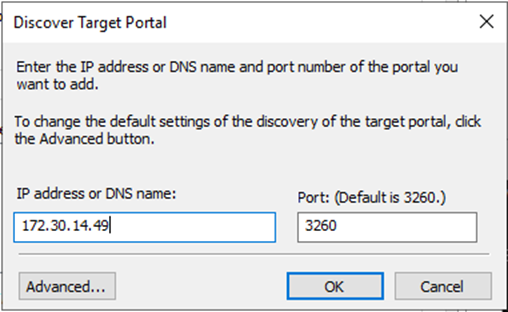
-
在「Target」（目標）索引標籤上、按一下「Connect」（連線）、選取「Enable Multi-Path（啟用多重路徑）」（若適用於您的組態）、然後按一下「OK（確定）」連線至
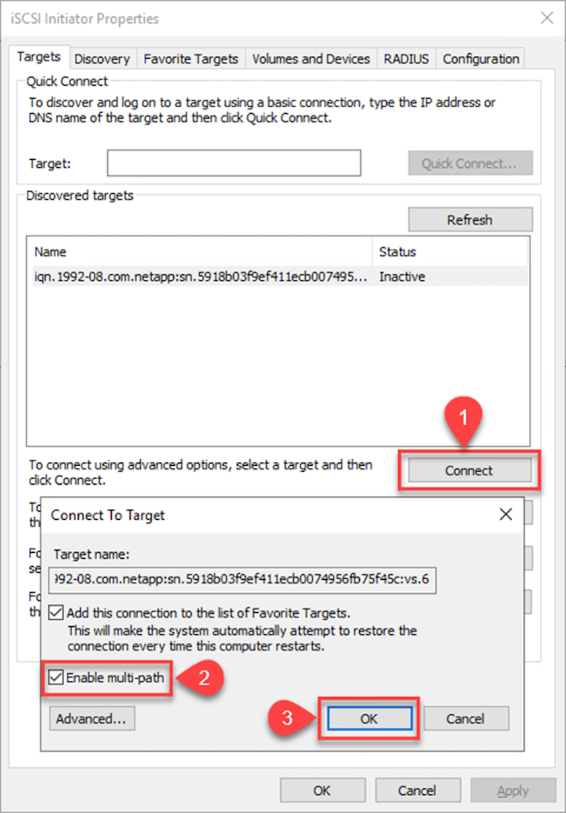
-
開啟「電腦管理」公用程式、使磁碟上線。請確認它們保留的磁碟機代號與先前所保留的相同。
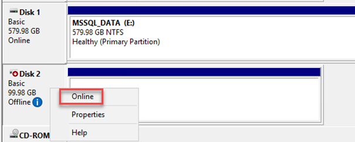
附加SQL Server資料庫
-
從SQL Server VM開啟Microsoft SQL Server Management Studio、然後選取附加以開始連線至資料庫的程序。
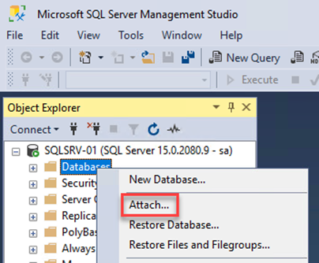
-
按一下「Add（新增）」、然後瀏覽至包含SQL Server主要資料庫檔案的資料夾、選取該檔案、然後按一下「OK（確定）」。

-
如果交易記錄位於不同的磁碟機上、請選擇包含交易記錄的資料夾。
-
完成後、按一下「確定」以附加資料庫。
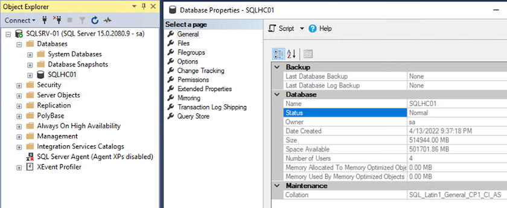
確認SnapCenter 與SQL Server外掛程式的通訊
利用還原為先前狀態的功能、它會自動重新探索SQL Server主機。SnapCenter若要使其正常運作、請記住下列先決條件：
-
必須將此項目置於災難恢復模式。SnapCenter這可透過Swagger API或災難恢復下的「全域設定」來完成。
-
SQL Server的FQDN必須與內部部署資料中心執行的執行個體相同。
-
原始SnapMirror關係必須中斷。
-
包含資料庫的LUN必須掛載到SQL Server執行個體和附加的資料庫。
若要確認SnapCenter 此功能為災難恢復模式、請從SnapCenter Websweb用戶端瀏覽至「設定」。前往「Global Settings（全域設定）」索引標籤、然後按一下「Disaster Recovery（災難恢復）請確定已啟用「啟用災難恢復」核取方塊。
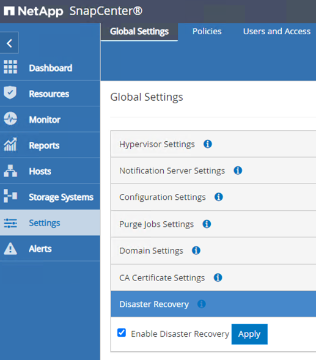
還原Oracle應用程式資料
下列程序提供如何在發生導致內部部署站台無法運作的災難時、在AWS的VMware Cloud Services中恢復Oracle應用程式資料的指示。
完成下列先決條件、以繼續執行恢復步驟：
-
Oracle Linux伺服器VM已使用Veeam完整還原還原至VMware Cloud SDDC。
-
已SnapCenter 建立次要的功能、SnapCenter 並已使用本節所述的步驟還原了資料庫和組態檔案 "支援備份與還原程序摘要。SnapCenter"
設定FSXfor Oracle還原–中斷SnapMirror關係
若要讓Oracle伺服器能夠存取位於FSxN執行個體上的次要儲存磁碟區、您必須先中斷現有的SnapMirror關係。
-
登入FSX CLI之後、請執行下列命令、檢視依正確名稱篩選的磁碟區。
FSx-Dest::> volume show -volume VolumeName*

-
執行下列命令以中斷現有的SnapMirror關係。
FSx-Dest::> snapmirror break -destination-path DestSVM:DestVolName

-
更新Amazon FSX Web用戶端中的交會路徑：
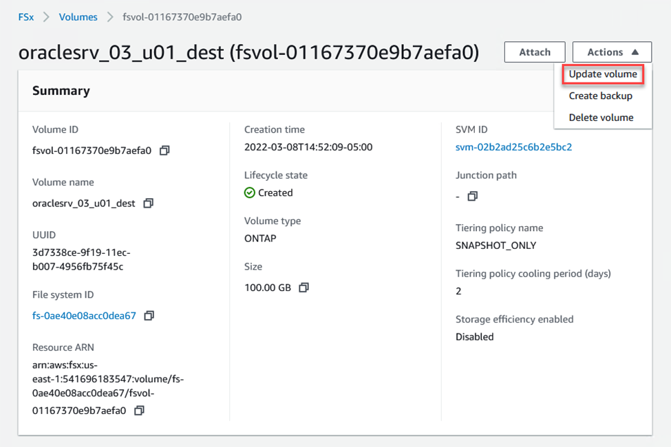
-
新增交會路徑名稱、然後按一下「Update（更新）」。從Oracle伺服器掛載NFS Volume時、請指定此交會路徑。

在Oracle伺服器上掛載NFS磁碟區
在Cloud Manager中、您可以使用正確的NFS LIF IP位址來取得掛載命令、以掛載包含Oracle資料庫檔案和記錄檔的NFS磁碟區。
-
在Cloud Manager中、存取FSX叢集的Volume清單。

-
從動作功能表中、選取Mount Command（掛載命令）以檢視及複製要在Oracle Linux伺服器上使用的掛載命令。


-
將NFS檔案系統掛載至Oracle Linux Server。用於掛載NFS共用的目錄已存在於Oracle Linux主機上。
-
在Oracle Linux伺服器上、使用mount命令掛載NFS磁碟區。
FSx-Dest::> mount -t oracle_server_ip:/junction-path
針對與Oracle資料庫相關的每個Volume重複此步驟。
若要讓NFS掛載在重新開機時持續執行、請編輯「/etc/stabs」檔案以包含掛載命令。 -
重新啟動Oracle伺服器。Oracle資料庫應正常啟動、並可供使用。
容錯回復
成功完成本解決方案所述的容錯移轉程序後、SnapCenter 即可恢復在AWS中執行的備份功能、而FSXfor ONTAP 效益現已被指定為主要儲存設備、且不存在與原始內部部署資料中心的SnapMirror關係。在內部部署恢復正常功能之後、您可以使用與本文件所述相同的程序、將資料鏡射回內部部署ONTAP 的更新儲存系統。
如本文件所述、您可以設定SnapCenter 將應用程式資料Volume從FSXfor ONTAP the Sfor the Sf8鏡射至ONTAP 內部部署的靜態儲存系統。同樣地、您也可以設定Veeam使用橫向擴充備份儲存庫、將備份複本複製到Amazon S3、以便駐留在內部部署資料中心的Veeam備份伺服器能夠存取這些備份。
容錯回復不在本文件的範圍之內、但容錯回復與此處概述的詳細程序幾乎沒有什麼不同。
結論
本文件所述的使用案例著重於已獲證實的災難恢復技術、強調NetApp與VMware之間的整合。NetApp ONTAP 支援的資料鏡射技術已獲證實、可讓組織設計跨越內部部署和ONTAP 與頂尖雲端供應商共同使用的不實技術的災難恢復解決方案。
FSX for ONTAP Sfor AWS是這樣的解決方案之一、可與SnapCenter 支援將SyncMirror 應用程式資料複製到雲端的功能不間斷地整合到功能上。Veeam備份與複寫是另一項廣為人知的技術、可與NetApp ONTAP 的VMware還原儲存系統完美整合、並提供容錯移轉至vSphere原生儲存設備的功能。
本解決方案提供使用來自ONTAP 代管SQL Server和Oracle應用程式資料之VMware系統的來賓連線儲存設備的災難恢復解決方案。利用SnapMirror提供易於管理的解決方案、可在支援應用程式的各個系統上保護應用程式磁碟區、並將其複製到位於雲端的FSX或CVO。SnapCenter ONTAP支援DR的解決方案可將所有應用程式資料容錯移轉至AWS上的VMware Cloud。SnapCenter